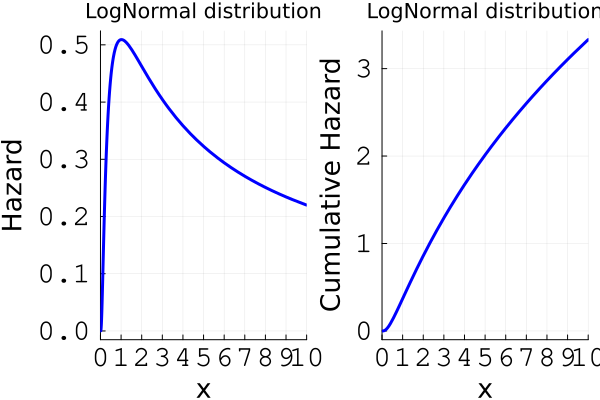
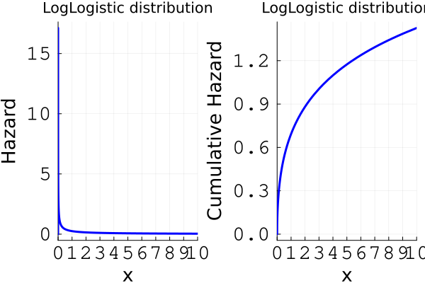
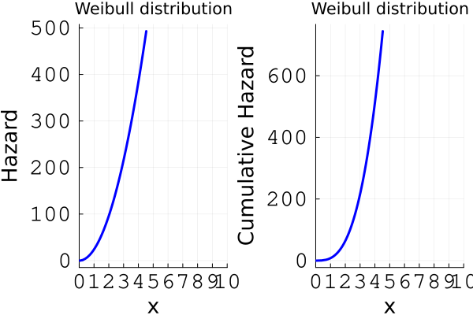
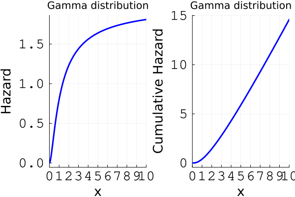

General Hazard Models
Hazard and cumulative hazard functions
The hazard and the cumulative hazard functions play a crucial role in survival analysis. These functions define the likelihood function in the presence of censored observations. Thus, they are important in many context. For more information about these functions, see Short course on Parametric Survival Analysis .
In Julia, hazard and cumulative hazard functions can be fetched through the hazard(dist, t) and cumhaz(dist, t) functions from SurvivalDistributions.jl, and can be aplied to any distributions complient with Distributions.jl's API. Note that SurvivalDistributions.jl also contains a few more distributions relevant to survival analysis. See also the (deprecated) HazReg.jl Julia Package.
Here are a few plots of hazard curves for some known distributions:
using Distributions, Plots, StatsBase, SurvivalDistributions
function hazard_cumhazard_plot(dist, distname; tlims=(0,10))
plt1 = plot(t -> hazard(dist, t),
xlabel = "x", ylabel = "Hazard", title = "$distname distribution",
xlims = tlims, xticks = tlims[1]:1:tlims[2], label = "",
xtickfont = font(16, "Courier"), ytickfont = font(16, "Courier"),
xguidefontsize=18, yguidefontsize=18, linewidth=3,
linecolor = "blue")
plt2 = plot(t -> cumhazard(dist, t),
xlabel = "x", ylabel = "Cumulative Hazard", title = "$distname distribution",
xlims = tlims, xticks = tlims[1]:1:tlims[2], label = "",
xtickfont = font(16, "Courier"), ytickfont = font(16, "Courier"),
xguidefontsize=18, yguidefontsize=18, linewidth=3,
linecolor = "blue")
return plot(plt1, plt2)
endhazard_cumhazard_plot (generic function with 1 method)LogNormal
hazard_cumhazard_plot(LogNormal(0.5, 1), "LogNormal")
LogLogistic
hazard_cumhazard_plot(Distributions.LogLogistic(1, 0.5), "LogLogistic")
Weibull
hazard_cumhazard_plot(Weibull(3, 0.5), "Weibull")
Gamma
hazard_cumhazard_plot(Gamma(3, 0.5), "Gamma")
General Hazard Models
The GH model is formulated in terms of the hazard structure
\[h(t; \alpha, \beta, \theta, {\bf x}) = h_0\left(t \exp\{\tilde{\bf x}^{\top}\alpha\}; \theta\right) \exp\{{\bf x}^{\top}\beta\}.\]
where ${\bf x}\in{\mathbb R}^p$ are the covariates that affect the hazard level; $\tilde{\bf x} \in {\mathbb R}^q$ are the covariates the affect the time level (typically $\tilde{\bf x} \subset {\bf x}$); $\alpha \in {\mathbb R}^q$ and $\beta \in {\mathbb R}^p$ are the regression coefficients; and $\theta \in \Theta$ is the vector of parameters of the baseline hazard $h_0(\cdot)$.
This hazard structure leads to an identifiable model as long as the baseline hazard is not a hazard associated to a member of the Weibull family of distributions [5].
SurvivalModels.GeneralHazardModel — Type
GeneralHazardModel{Method, B}A flexible parametric survival model supporting Proportional Hazards (PH), Accelerated Failure Time (AFT), Accelerated Hazards (AH), and General Hazards (GH) structures.
Fields
T: Vector of observed times.Δ: Vector of event indicators (true if event, false if censored).baseline: Baseline distribution (e.g.,Weibull()).X1: Covariate matrix for the first linear predictor (e.g., PH/AFT).X2: Covariate matrix for the second linear predictor (e.g., AH/GH).α: Coefficient vector forX2.β: Coefficient vector forX1.
Construction
You can construct a model directly by providing all parameters:
model = GeneralHazardModel(
GHMethod(),
T, Δ, Weibull(1.0, 2.0),
X1, X2,
α, β
)or fit it from data using the fit interface.
Supported methods:
ProportionalHazard: For PH models.AcceleratedFaillureTime: For AFT models.AcceleratedHazard: For AH models.GeneralHazard: For full GH models.
SurvivalModels.GeneralHazard — Type
GeneralHazard(T, Δ, baseline, X1, X2)
fit(GeneralHazard, @formula(Surv(T, Δ) ~ x1 + x2), @formula(Surv(T, Δ) ~ z1 + z2), df)
fit(GeneralHazard, @formula(Surv(T, Δ) ~ x1 + x2), df)Fit a General Hazard (GH) model with a specified baseline distribution and covariates.
Hazard function
\[h(t \,|\, x, z) = h_0\left(t \exp(z^\top \alpha)\right) \exp(x^\top \beta)\]
Maximum likelihood estimation in General Hazards models using provided baseline distribution, provided hazard structure (through the method argument), provided design matrices..
Parameters T,Δ represent observed times and statuses, while X1, X2 should contain covariates. The number of columns in design matrices can be zero.
Hazard structures are defined by the method, which should be <:AbstractGHMethod, available possibilities are PHMethod(), AFTMethod(), AHMethod() and GHMethod().
The baseline distribution should be provided as a <:Distributions.ContinuousUnivariateDistribution object from Distributions.jl or compliant, e.g. from SurvivalDistributions.jl.
T: Vector of observed times.Δ: Vector of event indicators (1=event, 0=censored).baseline: Baseline distribution (e.g., Weibull()).X1,X2: Covariate matrices.
You can also use the fit() interface with:
- Two formulas (for
X1andX2): for full GH models. - One formula: for PH, AFT, or AH models (the unused matrix will be ignored).
Example: Direct usage
using SurvivalModels, Distributions, Optim
T = [2.0, 3.0, 4.0, 5.0, 8.0]
Δ = [1, 1, 0, 1, 0]
X1 = [1.0 2.0; 2.0 1.0; 3.0 1.0; 4.0 2.0; 5.0 1.0]
X2 = [1.0 0.0; 0.0 1.0; 1.0 1.0; 0.0 0.0; 1.0 1.0]
model = GeneralHazard(T, Δ, Weibull, X1, X2)Example: Using the fit() interface
using SurvivalModels, DataFrames, Distributions, Optim, StatsModels
df = DataFrame(time=T, status=Δ, x1=X1[:,1], x2=X1[:,2], z1=X2[:,1], z2=X2[:,2])
model = fit(GeneralHazard, @formula(Surv(time, status) ~ x1 + x2), @formula(Surv(time, status) ~ z1 + z2), df)
# Or for PH/AFT/AH models:
model_ph = fit(ProportionalHazard, @formula(Surv(time, status) ~ x1 + x2), df)References:
The fitting routines is seeded via the internal function _initial_baseline_log_params which you may overload if you feel like its necessary.
SurvivalModels._initial_baseline_log_params — Function
_initial_baseline_log_params(baseline, T) -> Vector{Float64}Seed the optimizer's log-parameter vector for the baseline distribution of GeneralHazardModel. For baselines where Distributions.fit_mle exists and returns strictly positive parameters on the (marginal) event times, use those as the seed; for the rest, anchor the last (conventionally scale-like) parameter to log(median(T)) and leave the rest at log(1) = 0.
The zeros-init this replaces puts e.g. Weibull(1, 1) on data with event times in 10²–10⁴, putting the log-likelihood in a NaN region and erroring out (or, before the NaN check, silently returning β = 0). See issue #60.
Censoring is ignored for the seed — it's a starting point, not the final estimate. The joint optimizer subsequently refines α, β, and the baseline together.
Accelerated Failure Time (AFT) model
The AFT model is formulated in terms of the hazard structure
\[h(t; \beta, \theta, {\bf x}) = h_0\left(t \exp\{{\bf x}^{\top}\beta\}; \theta\right) \exp\{{\bf x}^{\top}\beta\}.\]
where ${\bf x}\in{\mathbb R}^p$ are the available covariates; $\beta \in {\mathbb R}^p$ are the regression coefficients; and $\theta \in \Theta$ is the vector of parameters of the baseline hazard $h_0(\cdot)$.
SurvivalModels.AcceleratedFaillureTime — Type
AcceleratedFaillureTime(T, Δ, baseline, X1, X2)
fit(AcceleratedFaillureTime, @formula(Surv(T, Δ) ~ x1 + x2), df)Fit an Accelerated Failure Time (AFT) model with a specified baseline distribution and covariates.
Hazard function
\[h(t \,|\, x) = h_0\left(t \exp(x^\top \beta)\right) \exp(x^\top \beta)\]
T: Vector of observed times.Δ: Vector of event indicators (1=event, 0=censored).baseline: Baseline distribution (e.g., Weibull()).X1,X2: Covariate matrices (onlyX1is used in AFT).
You can also use the fit() interface with a formula and DataFrame.
Proportional Hazards (PH) model
The PH model is formulated in terms of the hazard structure
\[h(t; \beta, \theta, {\bf x}) = h_0\left(t ; \theta\right) \exp\{{\bf x}^{\top}\beta\}.\]
where ${\bf x}\in{\mathbb R}^p$ are the available covariates; $\beta \in {\mathbb R}^p$ are the regression coefficients; and $\theta \in \Theta$ is the vector of parameters of the baseline hazard $h_0(\cdot)$.
SurvivalModels.ProportionalHazard — Type
ProportionalHazard(T, Δ, baseline, X1, X2)
fit(ProportionalHazard, @formula(Surv(T, Δ) ~ x1 + x2), df)Fit a Proportional Hazards (PH) model with a specified baseline distribution and covariates.
Hazard function
\[h(t \,|\, x) = h_0(t) \exp(x^\top \beta)\]
T: Vector of observed times.Δ: Vector of event indicators (1=event, 0=censored).baseline: Baseline distribution (e.g., Weibull()).X1,X2: Covariate matrices (onlyX1is used in PH).
You can also use the fit() interface with a formula and DataFrame.
Accelerated Hazards (AH) model
The AH model is formulated in terms of the hazard structure
\[h(t; \alpha, \theta, \tilde{\bf x}) = h_0\left(t \exp\{\tilde{\bf x}^{\top}\alpha\}; \theta\right) .\]
where $\tilde{\bf x}\in{\mathbb R}^q$ are the available covariates; $\alpha \in {\mathbb R}^q$ are the regression coefficients; and $\theta \in \Theta$ is the vector of parameters of the baseline hazard $h_0(\cdot)$.
SurvivalModels.AcceleratedHazard — Type
AcceleratedHazard(T, Δ, baseline, X1, X2)
fit(AcceleratedHazard, @formula(Surv(T, Δ) ~ x1 + x2), df)Fit an Accelerated Hazard (AH) model with a specified baseline distribution and covariates.
Hazard function
\[h(t \,|\, z) = h_0\left(t \exp(z^\top \alpha)\right)\]
T: Vector of observed times.Δ: Vector of event indicators (1=event, 0=censored).baseline: Baseline distribution (e.g., Weibull()).X1,X2: Covariate matrices (onlyX2is used in AH).
You can also use the fit() interface with a formula and DataFrame.
Available baseline hazards
The current version of the simulate command implements the following parametric baseline hazards for the models discussed in the previous section.
Power Generalised Weibull (PGW) distribution.
Exponentiated Weibull (EW) distribution.
Generalised Gamma (GenGamma) distribuiton.
Gamma (Gamma) distribution.
Lognormal (LogNormal) distribution.
Log-logistic (LogLogistic) distribution.
Weibull (Weibull) distribution. (only for AFT, PH, and AH models)
Prediction interface
Once a GeneralHazardModel is fitted (or directly constructed), you can evaluate per-subject cumulative hazards and survival probabilities at user-supplied times. The four hazard structures share the same closed-form expression via the unified representation
\[H(t \,|\, x) = H_0\!\left(t \cdot c_1(x)\right) \cdot c_2(x)\]
where $H_0$ is the cumulative hazard of the baseline distribution and $(c_1, c_2)$ are the method-specific time- and hazard-scale multipliers (c1/c2 in the code). The survival is $S(t \,|\, x) = \exp(-H(t \,|\, x))$.
predict(model, :survival) # length-n vector, each subject at own Tᵢ
predict(model, :expected) # length-n vector of Λᵢ(Tᵢ)
predict(model, :survival, t) # length-n vector at scalar t
predict(model, :expected, t)
predict(model, :survival, ts) # n × length(ts) matrix
predict(model, :expected, ts)The default no-arg form (predict(model) or predict(model, :survival)) evaluates each subject at their own observed time $T_i$, matching the convention used by the Cox interface.
Predict on new data
Each prediction also accepts a newdata::DataFrame argument. The fit's stored formula(s) are re-applied to newdata to rebuild the design matrices $X_1$, $X_2$, so newdata must contain every predictor column referenced in the original @formula(...). For models fit with fit(GHM, formula, df) (one formula), the same formula is stored twice and used for both $X_1$ and $X_2$; for fit(GeneralHazard, formula1, formula2, df) the two are stored separately.
predict(model, :survival, newdata, t) # length-n_new at scalar t
predict(model, :expected, newdata, t)
predict(model, :survival, newdata, ts) # n_new × length(ts) matrix
predict(model, :expected, newdata, ts)Newdata predict requires an explicit time argument — there is no "own time" default for arbitrary new subjects. Models built directly via the positional constructor (without the formula1 / formula2 keyword arguments) do not have stored formulas and will error on newdata predict.
SurvivalModels.predict_expected — Method
predict_expected(m::GeneralHazardModel)
predict_expected(m::GeneralHazardModel, t::Real)
predict_expected(m::GeneralHazardModel, ts::AbstractVector)
predict_expected(m::GeneralHazardModel, newdata::DataFrame, t::Real)
predict_expected(m::GeneralHazardModel, newdata::DataFrame, ts::AbstractVector)Per-subject cumulative hazard Λᵢ(t) = H₀(t · c1ᵢ) · c2ᵢ, where H₀ is the cumulative hazard of the baseline distribution and (c1ᵢ, c2ᵢ) are the method-specific time- and hazard-scale multipliers (PH, AFT, AH, GH share the same closed form via the unified H(t|x) = H₀(t · c1) · c2 representation).
Output shape:
- no time argument → length-
nvector with each subject evaluated at their own observed timeTᵢ; t::Real→ length-nvector at the scalar time;ts::AbstractVector→n × length(ts)matrix.
With newdata::DataFrame the design matrices are rebuilt by applying the fit's stored formula(s) — newdata must contain every predictor column referenced in the original @formula(...). Newdata predict requires an explicit time argument (no "own time" default).
SurvivalModels.predict_survival — Method
predict_survival(m::GeneralHazardModel)
predict_survival(m::GeneralHazardModel, t::Real)
predict_survival(m::GeneralHazardModel, ts::AbstractVector)
predict_survival(m::GeneralHazardModel, newdata::DataFrame, t::Real)
predict_survival(m::GeneralHazardModel, newdata::DataFrame, ts::AbstractVector)Per-subject survival probability Sᵢ(t) = exp(-Λᵢ(t)) derived from predict_expected. Shapes match predict_expected; newdata variants require an explicit time argument.
Fit statistics
GeneralHazardModel <: StatsAPI.StatisticalModel, so a fitted model supports the standard statistical-model accessors. aic, aicc, and bic follow from loglikelihood, dof, and nobs; stderror follows from vcov. coef and vcov are reported on the inference scale [log.(baseline parameters); active regression coefficients], so MvNormal(coef(m), vcov(m)) is a coherent parameter-uncertainty distribution.
StatsAPI.loglikelihood — Method
loglikelihood(m::GeneralHazardModel)Maximized log-likelihood of the fitted model, captured from the optimizer at fit time (NaN for models built by the direct, non-optimizing constructor).
StatsAPI.nobs — Method
nobs(m::GeneralHazardModel)Number of observations (event/censoring times) the model was fit to.
StatsAPI.dof — Method
dof(m::GeneralHazardModel)Number of free parameters consumed by the fit: the baseline distribution's parameters plus the regression coefficients that actually enter the hazard for this model's structure (β for PH/AFT, α for AH, both for GH).
StatsAPI.coef — Method
coef(m::GeneralHazardModel)Identified parameters on the scale used for inference: [log.(baseline parameters); active regression coefficients], where the active coefficients are β (PH/AFT), α (AH), or [α; β] (GH). This ordering matches vcov, so MvNormal(coef(m), vcov(m)) is a coherent sampling distribution for the parameter uncertainty (exponentiate the baseline entries to recover the natural-scale baseline parameters).
StatsAPI.vcov — Method
vcov(m::GeneralHazardModel)Covariance of coef: the inverse observed information, i.e. the inverse of the Hessian of the fitted negative log-likelihood at the optimum, restricted to the identified parameters (the inactive coefficient block makes the full Hessian singular). Computed on demand — LBFGS never forms the Hessian during the fit, so there is nothing cached to reuse. stderror follows from this via the generic StatisticalModel method.
Brier score
Inverse-probability-of-censoring-weighted Brier score (Graf et al. 1999) and its integrated form work for GeneralHazardModel through the same brier_score(model, ...) / integrated_brier_score(model, ...) API used for Cox. See the Model Evaluation: Brier Score section of the Cox documentation for the mathematical definition and signature list.
Simulating times to event from a general hazard structure with simulate
The simulate command (ported from HazReg.jl; formerly simGH, now a deprecated alias) allows one to simulate times to event from the following models:
- General Hazard (GH) model [5] [6].
- Accelerated Failure Time (AFT) model [7].
- Proportional Hazards (PH) model [8].
- Accelerated Hazards (AH) model [9].
A description of these hazard models is presented below as well as the available baseline hazards.
SurvivalModels.simulate — Function
simulate(n, method, baseline, X1, X2, α, β; rng=Random.default_rng())
simulate(n, method, baseline, formula[, formula2], df, α, β; rng=Random.default_rng())
simulate(n, model::GeneralHazardModel; rng=Random.default_rng())Simulate n times to event from a general-hazard model with hazard structure method (PHMethod()/AFTMethod()/AHMethod()/GHMethod()) and baseline distribution. Each of the n rows of the design (X1/X2, or built from formula/df via modelcols exactly as in fit) yields one event time by inverting that subject's survival Sᵢ(t)=U, i.e. Tᵢ = quantile(baseline, 1 − (1−Uᵢ)^(1/c2ᵢ)) / c1ᵢ. α are the X2 coefficients and β the X1 coefficients (only the ones the structure uses).
The fitted-model form delegates here using the model's own design/coefficients.
References:
Illustrative example
In this example, we simulate $n=1,000$ times to event from the GH, PH, AFT, and AH models with PGW baseline hazards, using the simulate() function. This functionality was ported from HazReg.jl
PGW-GH model
using SurvivalModels, Distributions, DataFrames, Random, SurvivalDistributions
using SurvivalModels: simulate
# Simulte design matrices
n = 100
Random.seed!(123)
des = randn(n, 2)
des_t = randn(n, 2)
# True parameters
theta0 = [0.1, 2.0, 5.0]
alpha0 = [0.5, 0.8]
beta0 = [-0.5, 0.75]
# Construct the model directly (no optimization)
model = GeneralHazard(zeros(n), trues(n),
PowerGeneralizedWeibull(theta0...),
des, des_t, alpha0, beta0)
# Simulate event times
simdat = simulate(n, model)
# Administrative censoring.
cens = 10
status = simdat .< cens
simdat = min.(simdat, cens)
# Model fit from dataframe interface.
df = DataFrame(time=simdat, status=status, x1=des[:,1], x2=des[:,2], z1=des_t[:,1], z2=des_t[:,2])
model = fit(GeneralHazard{PowerGeneralizedWeibull},
@formula(Surv(time, status) ~ x1 + x2),
@formula(Surv(time, status) ~ z1 + z2),
df)
result = DataFrame(
Parameter = ["θ₁", "θ₂", "θ₃", "α₁", "α₂","β₁", "β₂"],
True = vcat(theta0, alpha0, beta0),
Fitted = vcat(params(model.baseline)..., model.α, model.β)
)| Row | Parameter | True | Fitted |
|---|---|---|---|
| String | Float64 | Float64 | |
| 1 | θ₁ | 0.1 | 0.125543 |
| 2 | θ₂ | 2.0 | 1.75385 |
| 3 | θ₃ | 5.0 | 3.92871 |
| 4 | α₁ | 0.5 | 0.492821 |
| 5 | α₂ | 0.8 | 1.17079 |
| 6 | β₁ | -0.5 | -0.508637 |
| 7 | β₂ | 0.75 | 0.739206 |
Of course, increasing hte numebr of observations would increase the quality of the fitted values. You can also use "subset" models (PH, AH, AFT) through the convenient constructors as follows:
PGW-PH model
model = ProportionalHazard(zeros(n), trues(n),
PowerGeneralizedWeibull(theta0...),
des, zeros(n,0), # X2 is empty for PH
zeros(0), beta0
)
# Simulate event times and censor them
simdat = simulate(n, model)
cens = 10
status = simdat .< cens
simdat = min.(simdat, cens)
# Build the model and fit it:
df = DataFrame(time=simdat, status=status, x1=des[:,1], x2=des[:,2])
model = fit(ProportionalHazard{PowerGeneralizedWeibull},
@formula(Surv(time, status) ~ x1 + x2), df)
result = DataFrame(
Parameter = ["θ₁", "θ₂", "θ₃", "β₁", "β₂"],
True = vcat(theta0, beta0),
Fitted = vcat(params(model.baseline)..., model.β)
)| Row | Parameter | True | Fitted |
|---|---|---|---|
| String | Float64 | Float64 | |
| 1 | θ₁ | 0.1 | 0.144986 |
| 2 | θ₂ | 2.0 | 1.65966 |
| 3 | θ₃ | 5.0 | 3.4394 |
| 4 | β₁ | -0.5 | -0.572272 |
| 5 | β₂ | 0.75 | 0.735524 |
PGW-AFT model
# Construct the model directly (no optimization)
model = AcceleratedFaillureTime(
zeros(n), trues(n), PowerGeneralizedWeibull(theta0...),
des, zeros(n,0), # X2 is empty for AFT
zeros(0), beta0
)
# Simulate event times
simdat = simulate(n, model)
# Censoring
cens = 10
status = simdat .< cens
simdat = min.(simdat, cens)
df = DataFrame(time=simdat, status=status, x1=des[:,1], x2=des[:,2])
model = fit(AcceleratedFaillureTime{PowerGeneralizedWeibull},
@formula(Surv(time, status) ~ x1 + x2), df)
result = DataFrame(
Parameter = ["θ₁", "θ₂", "θ₃", "β₁", "β₂"],
True = vcat(theta0, beta0),
Fitted = vcat(params(model.baseline)..., model.β)
)| Row | Parameter | True | Fitted |
|---|---|---|---|
| String | Float64 | Float64 | |
| 1 | θ₁ | 0.1 | 0.0914492 |
| 2 | θ₂ | 2.0 | 2.20273 |
| 3 | θ₃ | 5.0 | 5.82919 |
| 4 | β₁ | -0.5 | -0.549269 |
| 5 | β₂ | 0.75 | 0.731007 |
PGW-AH model
# Construct the model directly (no optimization)
model = AcceleratedHazard(zeros(n), trues(n),
PowerGeneralizedWeibull(theta0...),
zeros(n,0), des_t, # X1 is empty for AH
alpha0, zeros(0)
)
# Simulate event times
simdat = simulate(n, model)
cens = 10
status = simdat .< cens
simdat = min.(simdat, cens)
df = DataFrame(time=simdat, status=status, z1=des_t[:,1], z2=des_t[:,2])
model = fit(AcceleratedHazard{PowerGeneralizedWeibull},
@formula(Surv(time, status) ~ z1 + z2), df)
result = DataFrame(
Parameter = ["θ₁", "θ₂", "θ₃", "α₁", "α₂"],
True = vcat(theta0, alpha0),
Fitted = vcat(params(model.baseline)..., model.α)
)| Row | Parameter | True | Fitted |
|---|---|---|---|
| String | Float64 | Float64 | |
| 1 | θ₁ | 0.1 | 0.0869285 |
| 2 | θ₂ | 2.0 | 2.42805 |
| 3 | θ₃ | 5.0 | 5.73151 |
| 4 | α₁ | 0.5 | 0.374832 |
| 5 | α₂ | 0.8 | 0.916131 |
- [5]
- Y. Chen and N. Jewell. On a general class of semiparametric hazards regression models. Biometrika 88, 687–702 (2001).
- [6]
- F. Rubio, L. Remontet, N. Jewell and A. Belot. On a general structure for hazard-based regression models: an application to population-based cancer research. Statistical Methods in Medical Research 28, 2404–2417 (2019).
- [7]
- J. Kalbfleisch and R. Prentice. The statistical analysis of failure time data (John Wiley & Sons, 2011).
- [8]
- D. Cox. Regression models and life-tables. Journal of the Royal Statistical Society: Series B (Methodological) 34, 187–202 (1972).
- [9]
- Y. Chen and M. Wang. Analysis of accelerated hazards models. Journal of the American Statistical Association 95, 608–618 (2000).